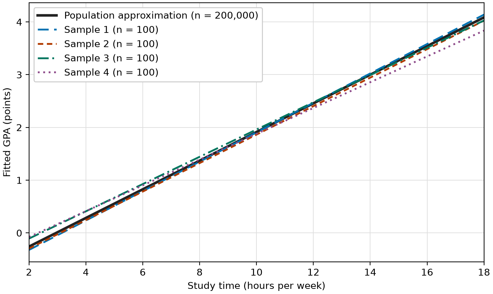
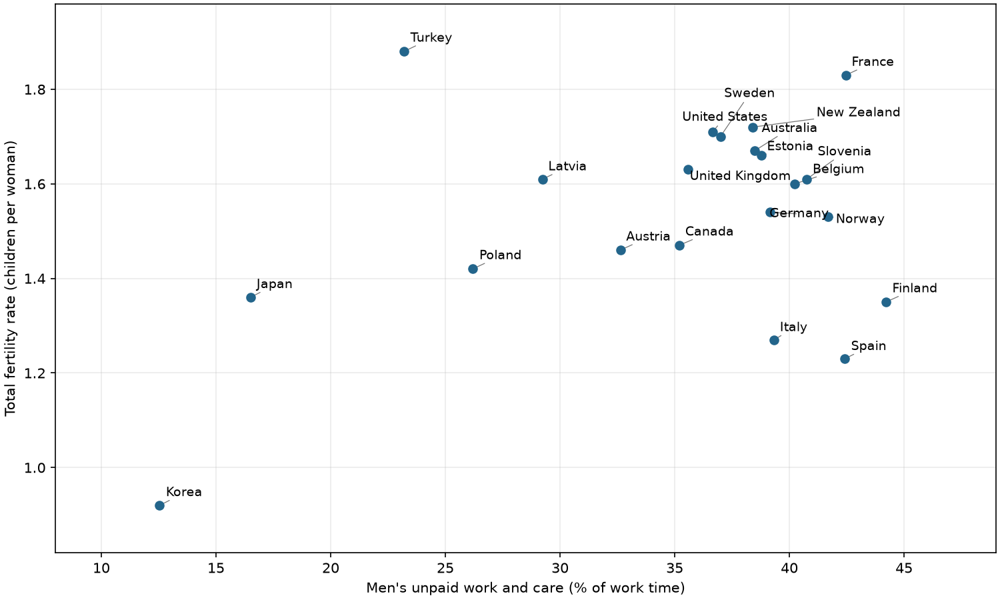
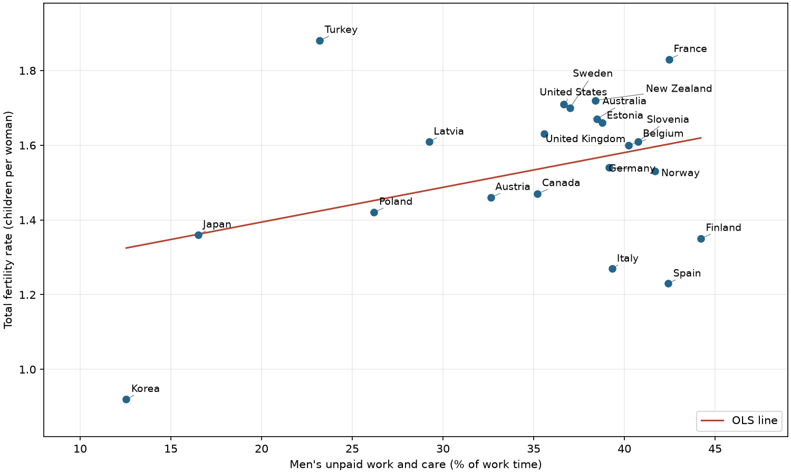
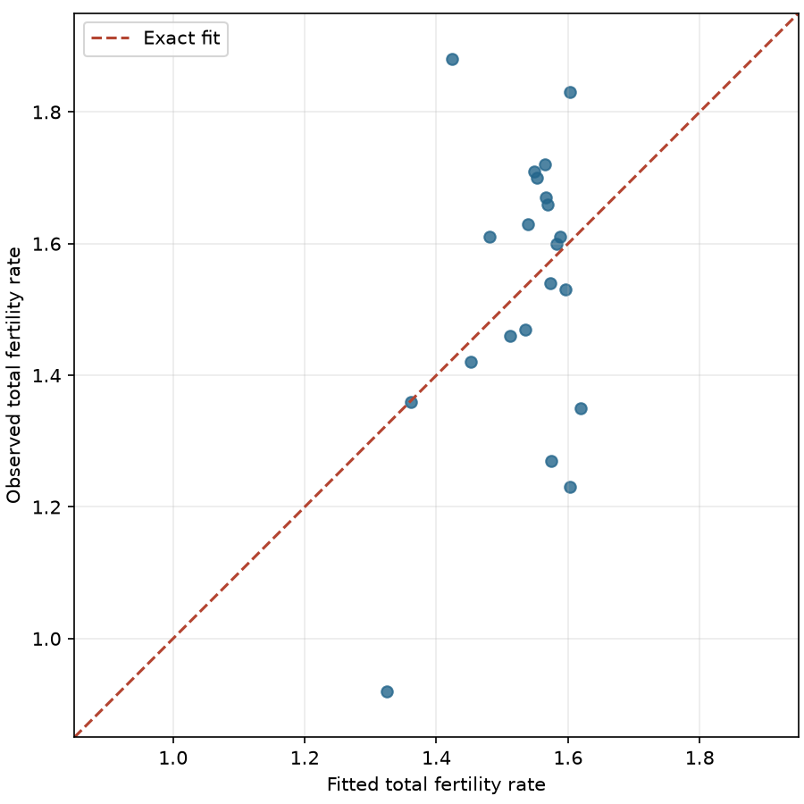

回帰で何をするか / 出生率のデータで行う単回帰分析
勉強時間が長い学生と短い学生では, 平均 GPA はどれだけ違うでしょうか. 回帰分析では, 勉強時間が同じ学生の GPA の平均を式で表し, 勉強時間の異なる学生どうしで平均を比べます. 標本から求めた平均の差を, どの学生の集団について述べられるかも考えます.
この分野の本体は, 関係の定量化と母集団への推測です. 同じ GPA のデータを, 新しく入学する学生の成績を予測したり, 勉強時間を増やす取り組みについて因果を問うたりする場合にも使います. 答えたい問いによって, 前提と結果の確かめ方が変わります.
回帰式と回帰係数
架空の学生のデータで, 週あたりの勉強時間を x とします. 勉強時間が x の学生の平均 GPA を直線で表すと, 式は次の形になります.
m(x) = \beta_0 + \beta_1 x
m(x) は回帰式が表す平均です. 勉強時間が同じ学生でも, 1 人ずつの GPA はその平均の周りにばらつきます.
- GPA は平均を求めたい変数なので, 目的変数 (被説明変数) と呼びます.
- 勉強時間 x は平均を比べる条件に使うので, 説明変数と呼びます.
- m(x) = \beta_0 + \beta_1 x のように関係を表す式を回帰式 (回帰方程式) と呼びます.
- \beta_0 は切片です. 勉強時間が週 0 時間のときの, 式の上での平均 GPA を表します. 週 0 時間に近い観測が少なければ, 切片は観測の少ない範囲での式の値です.
- \beta_1 は回帰直線の傾きです. 週あたりの勉強時間が 1 時間違う学生を比べたときの, 式の上での平均 GPA の差です.
- 切片と傾きを合わせて回帰係数と呼びます.
例えば, 傾きが 0.27 の直線では, 週 11 時間勉強する学生の平均 GPA は週 10 時間の学生より 0.27 高いと読みます. 同じ直線上で, 週 12 時間と週 10 時間の学生の平均を比べると, 差は 2 \times 0.27 = 0.54 です.
単回帰と重回帰
説明変数が勉強時間の 1 つなら, 単回帰分析です. 奨学生かどうかやアルバイト時間も含め, 説明変数を 2 つ以上使う場合を重回帰分析と呼びます. 線形の重回帰では, 説明変数ごとに係数を求めます. その係数を読むときは, 残りの説明変数が同じ条件の学生を比べます. 勉強時間とアルバイト時間を例にした読み方は重回帰分析と偏回帰係数にあります.
線形回帰と非線形回帰
説明変数を 1 つにしたとき, 平均を直線で表す回帰は線形回帰の一例です. 説明変数を 2 つにして, それぞれに係数を掛けて足す式も線形回帰です. 線形回帰では, どの係数も, 説明変数から作った項に掛けて足し合わせます.
非線形回帰の一例は, 勉強時間 x が長くなるにつれて平均 GPA が上限に近づく式です.
m(x) = \beta_0\{1 - \exp(-\beta_1 x)\}
\beta_0,\beta_1 がともに正のとき, \beta_0 は上限を表し, \beta_1 が大きいほど平均は短い勉強時間で上限に近づきます. \beta_1 が指数関数の中に入るため, 式は係数について非線形です. なお, x^2 を項として足す回帰では, x に対して曲線を描いても, 係数については線形です.
GPA のデータから問えること
ある大学の学生について GPA, 週あたりの勉強時間とアルバイト時間, 奨学生かどうかを記録したとします. この記録から出発して, 次の問いを立てられます. 母集団は, 推測や予測について述べたい学生の集団です.
| 問い | 誰について何を述べるか | 何を前提にするか | 何で確かめるか |
|---|---|---|---|
| (a) 関係の定量化と母集団への推測. 他の条件が同じで, 勉強時間だけ週 1 時間違う学生を比べると, 平均 GPA はどれだけ違うか | 標本を取った母集団での, 条件をそろえた平均の差 | 母集団からの抽出に偏りがなく, 比べる条件を先に決めていること. 比較する条件の範囲で, 回帰式が平均の差を表せること | 係数と信頼区間を示し, 必要なら検定する. 同じ母集団の別の標本でも差を調べる |
| (b) 予測. 次に入学する学生の GPA をどれだけ正確に当てられるか | 同じ母集団の新しい学生 1 人ずつの GPA と, 予測の誤差 | 新しい学生が標本と同じ分布から来て, 予測に使う変数を予測時に得られること | 回帰式を決めるときに使わなかったデータで, 予測値と実際の値の差を測る |
| (c) 因果推論. 勉強時間を増やす介入を行うと, 平均 GPA はどう変わるか | 同じ母集団で, 介入する場合としない場合の平均 GPA の差 | 介入内容を定め, 観測した結果と介入した場合の結果を結び付ける因果の構造を仮定すること. 無作為な割り付けで比較できる場合もある | 観測データから目的の差を求められる条件を調べ, 仮定を変えた場合や, 別の設計で得た結果を検討する |
平均と一人ひとりの GPA
関係の定量化では, 例えば同じ奨学生区分とアルバイト時間の学生に絞って, 勉強時間が異なる学生の平均 GPA を比べます. 標本に現れた差を母集団の差として推定するときは, 標本の選び方が根拠になります.
予測では, 同じ勉強時間の学生の平均 GPA を, 新しい学生の予測値として使えます. 予測には, 手元の標本で平均を推定する誤差と, 同じ勉強時間の学生に残る個人差が含まれます. 新しい学生の成績が予測からどのくらい外れるかは, 未使用のデータで測ります. その手順と, 平均の区間と個人の予測区間の読み方は予測にあります.
観測した比較と介入した場合の比較
因果推論で比べるのは, 同じ学生の集団が勉強時間を増やす取り組みを受けた場合と, 受けなかった場合の平均です. 観測データで勉強時間の異なる学生を並べると, 勉強時間以外の条件も異なることがあります. 介入した場合の平均差を求められるかは, 勉強時間と GPA がどう決まるかについて置く仮定や, データを集めた設計によって変わります.
探索と対象にする母集団
探索は, 例えば勉強時間, アルバイト時間, 運動時間の散布図を見ながら, どの変数と GPA の関係を調べるかを決める作業です. 探索で見つけた関係は仮説として扱い, 別のデータを集めて確かめます. 変数の選び方はモデル選択で扱います.
同じ大学の別の年度や, 別の大学の学生まで対象にするときは, 学習環境や GPA の付け方が元の集団とどの程度共通するかを調べます. 母集団を広げるための前提は, 平均の差を推測する場合にも, 新しい学生を予測する場合にも, 介入の結果を考える場合にも加わります.
回帰の目的を分ける文献
Hernán et al. (2019) は, データ分析を記述, 予測, 反事実の予測に分けています. 反事実の予測には, 介入した場合を問う因果推論が含まれます. Leek & Peng (2015) は, 仮説をつくる探索と, 標本をもとに推測する分析を区別しています.
Shmueli (2010) の「説明」は, 理論から導いた因果の仮説を検証することを指します. 表の (a) で求めるのは, 観測した条件をそろえた学生どうしの平均の差です. Gelman et al. (2020) は, 回帰の用途として予測, 関連の探索, 標本から母集団への外挿, 因果推論を挙げています.
標本が変われば推定値も変わる
架空の学生を作る同じ仕組みから, 100 人ずつの独立な標本を 4 つ取りました. 各標本で, 勉強時間だけを説明変数にして GPA の回帰直線を求めます. 同じ仕組みから別に生成した 20 万人についても直線を求め, 母集団の回帰直線の近似とします.

横軸は週あたりの勉強時間, 縦軸は直線が与える GPA です. 黒い実線が 20 万人から求めた直線で, その傾きは約 0.272 です. 色の付いた線を左右にたどると, 同じ生成の仕組みでも, 標本によって傾きと切片が異なることが分かります. 4 標本の傾きは約 0.245 から 0.279 でした. 例えば週 6 時間と週 16 時間の位置で直線を見比べると, 線の並び順が変わります.
観測した GPA の範囲は 0 から 4 です. 当てはめた直線には上下限がないため, 図の横軸の両端ではその範囲を外れる値も出ます. GPA の上下限と回帰式の関係は母回帰式と誤差にあります.
1 つの標本の傾きには, その標本にどの学生が入ったかによるばらつきがあります. 信頼区間は, 標本を取り直したときに推定値がどれだけばらつくかをもとに, 母集団の係数について値の範囲を示します. 検定では, 例えば母集団の傾きが 0 だと仮定したときに, 標本で得た傾きと同じ程度か, それ以上に 0 から離れた傾きがどれほど起こりやすいかを調べます. 計算と区間の読み方は回帰係数の分布・信頼区間・検定にあります.
頻度論とベイズ統計学
この分野では頻度論の枠組みで母集団への推測を行います. 母集団の係数のような, 母集団を特徴付ける値を母数と呼びます. 頻度論では母数を固定した値とみなし, 同じ手順で標本を取り直したときのばらつきから区間と検定を作ります.
ベイズ統計学では, 母数の不確かさを確率分布で表します. データを観測する前の不確かさを表す事前分布と, データの出方を表すモデルを組み合わせ, 観測後の事後分布を求めます. 事後分布は, 例えば GPA の傾きがどの範囲にあるかを述べるのに使えます.
頻度論とベイズ統計学の違いは, 不確かさをどう表すかにあります. どちらの枠組みでも, 関係の定量化, 予測, 因果推論の問いを扱えます. ベイズの考え方と実例は統計モデリングとベイズ統計学の基礎にあります.
結果が 0 か 1 のとき
単位を取得した学生を 1, 取得しなかった学生を 0 とします. 同じ勉強時間の学生に絞ると, 0 と 1 の平均は 1 の割合です. 例えば 10 人のうち 7 人が単位を取得したとき, 平均は 7/10 = 0.7 です. 母集団では, 条件をそろえたときの 0 と 1 の平均が, 単位を取得する確率になります.
一般化線形モデルでは, 目的変数の取りうる値に応じて分布と平均の表し方を選びます. 例えばロジスティック回帰では, 説明変数の線形式を 0 と 1 の間の確率に変換して使います. 変換の式と確率の求め方は一般化線形モデルと二値の応答にあります.
演習
Exercise REG-INTRO-1
GPA についての 3 つの問い
次の問いを, 関係の定量化と母集団への推測, 予測, 因果推論, 探索のいずれかに分類してください. それぞれ, 誰について述べるかと, 結果を得るために必要な前提を 1 つずつ挙げてください.
- 今年度の学生で, 奨学生区分とアルバイト時間が同じ場合に, 勉強時間が週 1 時間長い学生の平均 GPA はどれだけ高いか.
- 来年度, 入学後 1 か月の勉強時間の記録を使うと, 新入生の学期末 GPA をどれだけ正確に当てられるか.
- 学期中に自習時間を週 1 時間設けると, 同じ学生集団の学期末の平均 GPA はどう変わるか.
回答
- 関係の定量化と母集団への推測です. 対象は今年度の学生の母集団です. 母集団から偏りなく標本を取ることが前提です.
- 予測です. 対象は次に入学する学生一人ひとりです. 例えば, 回帰式を作った標本と来年度の新入生の分布が同じという前提を置きます. 来年度と同様の条件をもつ未使用の学生データで誤差を測ります.
- 因果推論です. 対象は自習時間を設ける場合と設けない場合の, 同じ学生集団の平均の差です. 例えば, 自習時間を設けるかどうかを無作為に割り付けて, 群の比較ができるようにします.
Exercise REG-INTRO-2
データを見てから見つけた関係
担当者は, 勉強時間・運動時間・アルバイト時間と GPA の散布図を作り, 関係が目立った運動時間について詳しく調べることにしました. この時点の作業を分類してください. 同じ大学の母集団でも関係が成り立つかを確かめるには, 次にどのような標本を使いますか.
回答
関係を探しながら変数を選んでいるので探索です. 運動時間と GPA に関係があるという仮説を立て, 同じ大学の対象学生から新しく偏りなく取った標本で確かめます. 新しい標本を見る前に, どの条件をそろえ, どの回帰係数を調べるかを決めます.
参考文献
出生率のデータで行う単回帰分析
男性の家事・育児時間の割合が 1 パーセントポイント高い国では, 合計特殊出生率は平均でどれだけ違うでしょうか. 国ごとの値を散布図にし, 単回帰直線の傾きでこの関係を表します.
出生率と時間配分の表の結合
fertility_rates.csv と
time_used.csv をダウンロードし, コードと同じフォルダに置いてください.
コードはそのフォルダから実行してください.
import matplotlib.pyplot as plt
import numpy as np
import pandas as pd
import statsmodels.api as sm
from adjustText import adjust_text
fertility = pd.read_csv("fertility_rates.csv")
time_use = pd.read_csv("time_used.csv")Country は国名, Fertility は合計特殊出生率です.
時間配分の表では, Paid が有償労働, Unpaid が無償の家事, Care が育児などのケアに対応します.
男性がこの 3 項目に使う時間のうち, 家事・育児に使う割合を百分率で計算し, r に格納します.
unpaid_and_care = time_use["Unpaid"] + time_use["Care"]
total_work = time_use["Paid"] + unpaid_and_care
time_use["r"] = 100 * unpaid_and_care / total_work出生率の表ではトルコが Türkiye, 時間配分の表では Turkey と表記されています.
出生率の表の表記を Turkey にそろえてから, Country をキーに結合します.
validate="one_to_one" を指定すると, 同じキーが片方の表に複数回現れたときにエラーになります.
外部結合 (how="outer") では, 片方の表にしかない行も残ります.
indicator=True で追加した _merge 列で, それぞれの行がどちらの表にあったかを確かめます.
fertility["Country"] = fertility["Country"].replace({"Türkiye": "Turkey"})
joined = fertility.merge(
time_use[["Country", "r"]],
on="Country",
how="outer",
validate="one_to_one",
indicator=True,
)
unmatched = joined.loc[joined["_merge"] != "both", ["Country", "_merge"]]
print(unmatched.to_string(index=False)) Country _merge
Chile left_only
Colombia left_only
Costa Rica left_only
Czech Republic left_only
Denmark left_only
Greece left_only
Hungary left_only
Iceland left_only
Ireland left_only
Israel left_only
Lithuania left_only
Luxembourg left_only
Netherlands left_only
OECD average left_only
Portugal left_only
Slovak Republic left_only
Switzerland left_onlyleft_only の行には出生率だけがあります.
今回の表には, 時間配分の表にだけある right_only の行はありません.
both の行を残し, dropna() で数値が欠けている行を除きます.
両方の値がそろったのは 22 か国です.
本文では, 旧教材と同じくメキシコを外した 21 か国を使います.
メキシコを加えた場合は Exercise REG-SIMPLE-1 で確かめます.
matched = joined.loc[joined["_merge"] == "both", ["Country", "Fertility", "r"]]
countries = matched.set_index("Country").dropna()
analysis = countries.drop(index="Mexico")
print(f"Matched: {len(countries)}, used in the main example: {len(analysis)}")Matched: 22, used in the main example: 21家事・育児時間の割合と出生率の散布図
横軸は男性の家事・育児時間の割合 (%) で, 計算式は 100 \times (\mathrm{Unpaid}+\mathrm{Care})/(\mathrm{Paid}+\mathrm{Unpaid}+\mathrm{Care}) です. 縦軸は 2019 年の合計特殊出生率 (女性 1 人あたりの子どもの数) です. 時間配分は国によって 1999 年から 2013 年の調査に基づくため, 2 つの指標の年はそろっていません. 出典は OECD Family Database の SF2.1 (出生率) と LMF2.5 (時間配分) です.
def plot_countries(data):
fig, ax = plt.subplots(figsize=(10, 6), layout="constrained")
points = ax.scatter(data["r"], data["Fertility"], color="#23658b", zorder=3)
ax.set(
xlim=(8, 49),
ylim=(0.82, 1.98),
xlabel="Men's unpaid work and care (% of work time)",
ylabel="Total fertility rate (children per woman)",
)
ax.grid(alpha=0.25)
labels = [
ax.text(row.r, row.Fertility, country, fontsize=9)
for country, row in data.iterrows()
]
return fig, ax, points, labels
fig, ax, points, labels = plot_countries(analysis)
adjust_text(
labels,
objects=points,
ax=ax,
iter_lim=300,
min_arrow_len=4,
arrowprops={"arrowstyle": "-", "color": "0.45", "linewidth": 0.6},
)
plt.show()
plt.close(fig)
1 点は 1 か国です. 日本と韓国はどちらの値も低く, 図の左下にあります. トルコでは家事・育児時間の割合が約 23% で, 合計特殊出生率は 21 か国で最も高い 1.88 です. 右側では同程度の割合でも出生率にばらつきがあります.
単回帰の係数と国の組み合わせ
sm.OLS に目的変数と説明変数の表を渡します.
sm.add_constant は切片を求めるために, 全行が 1 の列 const を追加します.
fit() で係数を求め, summary().tables[1] で係数の表を取り出します.
def fit_fertility(data):
predictors = sm.add_constant(data[["r"]])
return sm.OLS(data["Fertility"], predictors).fit()
result = fit_fertility(analysis)
print(result.summary().tables[1])
print(f"R-squared: {result.rsquared:.3f}")==============================================================================
coef std err t P>|t| [0.025 0.975]
------------------------------------------------------------------------------
const 1.2082 0.197 6.119 0.000 0.795 1.621
r 0.0093 0.006 1.687 0.108 -0.002 0.021
==============================================================================
R-squared: 0.130| 列 | 読み方 |
|---|---|
coef |
係数の推定値です. const は切片, r は傾きです. |
std err |
係数の推定値の標準誤差です. |
t |
係数の推定値を標準誤差で割った t 統計量です. |
P>|t| |
係数が 0 という帰無仮説に対する両側 P 値です. |
[0.025 と 0.975] |
95% 信頼区間の下限と上限です. |
区間と検定の前提や計算は 回帰係数の区間と検定 で扱います. 出力の P 値と区間は, 母集団から標本を無作為に取るなど, 標本のばらつきを確率で表せる前提のもとで解釈します. この例の 21 か国はある母集団から偶然に取り出した標本ではないため, 表の P 値を母集団への推測には使いません. 母集団への推測は, 同じ仕組みから別の標本を作れる 合成 GPA の例 で扱います.
当てはめた直線では, 男性の家事・育児時間の割合が 1 パーセントポイント高い国ほど, 合計特殊出生率が平均で約 0.00931 高いと読みます. 決定係数は 0.130 で, 手元の 21 か国の出生率のばらつきのうち, 当てはめた直線で表せた割合を示します.
表記をそろえずに結合するとトルコが落ちます. その場合に相当する 20 か国, 本文の 21 か国, メキシコも含めた 22 か国で, 単回帰を当て直します.
comparisons = {
"Without Turkey or Mexico": analysis.drop(index="Turkey"),
"Main example": analysis,
"Including Mexico": countries,
}
for label, data in comparisons.items():
slope = fit_fertility(data).params["r"]
print(f"{label:25s} {len(data):2d} {slope:.5f}")当てはめた傾きの単位は, 家事・育児時間の割合 1 パーセントポイントあたりの合計特殊出生率の差です.
| 対象 | 国数 | 傾き |
|---|---|---|
| トルコとメキシコを除く | 20 | 0.01344 |
| この節の分析 (トルコを含み, メキシコを除く) | 21 | 0.00931 |
| トルコとメキシコを含む | 22 | 0.00517 |
トルコもメキシコも, 家事・育児時間の割合が約 20〜23% で, 合計特殊出生率が 1.88 以上です. この 2 国を順に加えると, 当てはめた傾きは小さくなります.
回帰直線と出生率の当てはまり
家事・育児時間の割合の最小値から最大値までを np.linspace で 100 点に区切ります.
各点に対する出生率の当てはめ値を計算し, 散布図に直線を重ねます.
work_share = np.linspace(analysis["r"].min(), analysis["r"].max(), 100)
fitted_line = result.params["const"] + result.params["r"] * work_share
fig, ax, points, labels = plot_countries(analysis)
ax.plot(work_share, fitted_line, color="#b44532", label="OLS line")
ax.legend(loc="lower right")
adjust_text(
labels,
objects=points,
ax=ax,
iter_lim=300,
min_arrow_len=4,
arrowprops={"arrowstyle": "-", "color": "0.45", "linewidth": 0.6},
)
plt.show()
plt.close(fig)
直線の傾きは正です. トルコの点は直線より上にあり, トルコの実測の出生率は, その家事・育児時間の割合に対応する当てはめ値より高くなっています.
国ごとの当てはめ値 (result.fittedvalues) を横軸に, 実測値を縦軸に置くと,
直線からのずれを国どうしで比べられます.
破線は実測値と当てはめ値が一致する場所です.
observed = analysis["Fertility"]
fitted = result.fittedvalues
limits = (0.85, 1.95)
fig, ax = plt.subplots(figsize=(6, 6), layout="constrained")
ax.scatter(fitted, observed, color="#23658b", alpha=0.8)
ax.plot(limits, limits, color="#b44532", linestyle="--", label="Exact fit")
ax.set(
xlim=limits,
ylim=limits,
xlabel="Fitted total fertility rate",
ylabel="Observed total fertility rate",
aspect="equal",
)
ax.legend()
ax.grid(alpha=0.25)
plt.show()
plt.close(fig)
破線より上の点では式が実測値を低く見積もり, 下の点では高く見積もっています. この図で比べているのは, 式を求めるのに使った国の当てはめ値と実測値です. 未使用のデータで予測の良さを測る方法は 予測と予測誤差 で扱います.
国の間で観測された関連からは, 日本で男性の家事・育児時間を増やしたときに出生率がどう変わるかは分かりません. 介入した場合の出生率を考えるには, 家事・育児時間と出生率に関係する背景も含めて仮定を置く必要があります. その考え方は 因果推論 で扱います.
演習
Exercise REG-SIMPLE-1
提出ファイル dsp5-1.py
メキシコを含めた出生率の単回帰分析
メキシコを含む 22 か国で単回帰を行い, 傾きを小数点以下 5 桁まで求めてください. 単回帰の係数と国の組み合わせ の 21 か国での傾きと比べ, 22 か国内の関連の要約として解釈してください.
回答
result_with_mexico = fit_fertility(countries)
print(f"n = {len(countries)}, slope = {result_with_mexico.params['r']:.5f}")n = 22, slope = 0.0051722 か国の直線では, 家事・育児時間の割合が 1 パーセントポイント高い国ほど, 合計特殊出生率が平均で約 0.00517 高いと読みます. メキシコを加えると傾きは 0.00931 から 0.00517 に小さくなります. どちらの傾きも, それぞれの当てはめに使った国の関連の要約です.